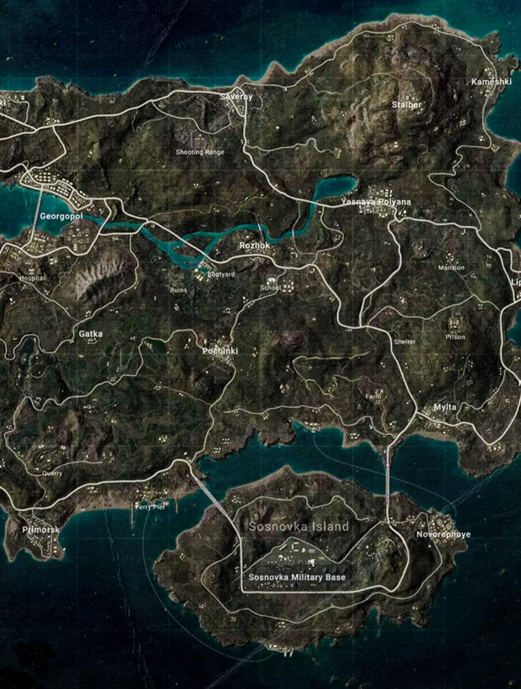
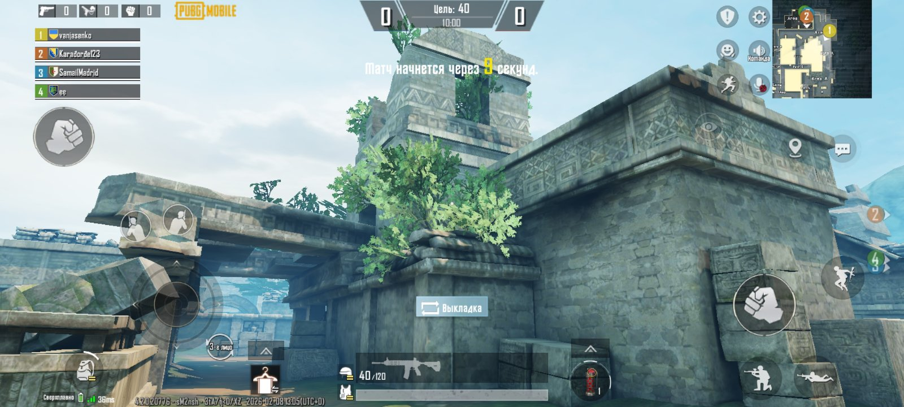
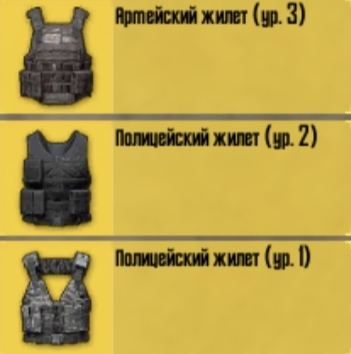
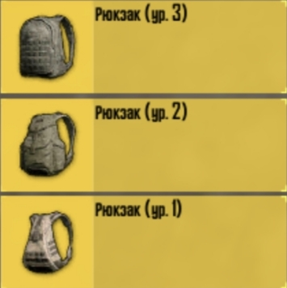

Повна назва цієї гри "PlayerUnkownsBattlegrounds",цю гру розробила південно-корейська компанія.
автор ідеї:Брендан Грін (відомий під ніком:PlayerUnknown) Cаме на честь його нікнейму і названа гра!
!інформація про цю гру!
В цій грі є три основні режими!
Рейтинговий-це режим в якому ви летите на літаку і можете вистрибнути з парашутом куди захочете,вам доступна відкрита карта де сто гравців грають з вами,вам потрібно вижити знайти зброю і знешкодити всіх ворогів,а в кінці (якщо вас знешкодили або ви всіх виграли) вам нараховуються бали (RP).
Безрейтинговий-це режим індентичний рейтинговому,але якщо вас знешкодили або ви всіх виграли вам НЕ нараховуються бали!Цей режим зазвичай використовується для того,щоб ознайомитися з грою.
Cвіт чудес-це режим в якому теж не нараховуються бали,тут можна створювати свої карти!І грати на інших картах гравців (але зазвичай вони не збалансовані)
!Карти в грі!
Всього в грі 10 офіційних карт!На яких можна грати,сама популярна з них це ерангель.Вона стала такою популярною бо вона перша,яку ми зустрінемо при в ході в гру (після практики),на цій карті є дуже багато місця для боїв тому матчі можуть іти і по 30хвилин!
Якщо ви не хочете довго шукати противників,і швидко потринуватись перед матчом,тоді вам точно підійде рейтингова арена!Тут маленька карта-і важкі бої,само гарно тринерувати тут клаузфайт (клаузфайт-це бій в близі коли ви на трьох метрах)!
!Броня і зброя!
Одна з важливих речей в PUBG є броня,без броні вас можна виграти за два,три і навить один постріл!Також важливою частиною пабга є лут,а щоб ви збирали цей лут вам потрібен рюкзак,рюкзаки бувають 1,2,3-рівней вони відрізняються між собою ємністю.
Зброя є сама важлива частина в пабгу,яка б в тебе не була броня без зброї тебе дуже легко знешкодити!В PUBG є дуже багато різної зброї,від снайперських гвинтівок до штурмових автоматів!